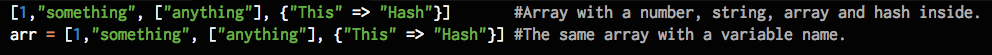
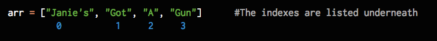
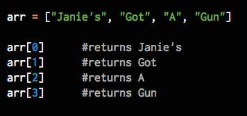
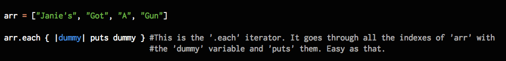
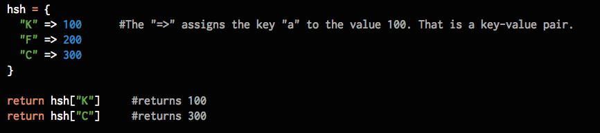
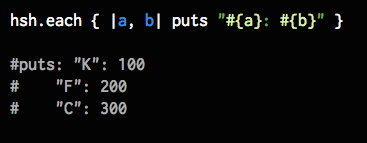

2/20/15
Problem Solving With Hashes and Arrays
In order to understand when to use Hash or an Array to solve problems, we must know what they are. WARNING: This subject can get heavy into the details so I will just dip a toe in the water when describing these data types.
Arrays
First up we have the Array whose beauty is only matched by it's simplicity. They are typically assigned a variable name which acts as a sort of label so that the data can be called on later. The variable name isn't actually necessary but is convenient for data retrieval. The data within an array can be any ruby object including another array.
Arrays can store an infinite amount of data and this data is retrieved through it's indexes. Indexes start at 0 and count up from there; 1,2,3,4... It's best explained with an example:
The format for retrieval goes as follows:
There are countless ways to iterate over an array. So much so, that entire chapters can be written on array iteration. In an attempt to expedite the learning process I suggest taking a look at the Ruby Docs. For the sake of clarity, I will go over one here:
Hashes
Now we can move onto hashes, a slightly more complex way of organizing a collection of data. This data comes in the form of key-value pairs. Hashes are similar to Arrays except the indexing is done with arbitrary keys of any object type. Hashes return values based on the corresponding keys.
Explanation of Hash initialization and iteration can be extensive and quite frankly I'm not ready to blog for that long. Here is a familiar method we saw earlier in the post we can use to iterate over our Hash named hsh:
Which and When (Problem Solving)
Aside from the obvious syntax, what makes these two data structures different? Well thats actually a loaded question... The response I was looking for was "The way they access their data." Given that there are an infinite number of problems involving Hashes and Arrays it would be impossible to suggest a "do this, if this" scenario in a mere blog post. Instead we can at least weaken the problem by asking ourselves: What will our input and desired output be?
Clearly array indexes are the victor in terms of ease of accessibility. Array indexes simply require a number (spoken on earlier). Which is practical for accessing unspecific, large chunks of data without climbing any security hurdles.
The Hash on the other hand requires passing through a certain level of security. We have to have the 'key' to unlock the 'value' so to speak. On an idealogical level this makes our input more acute, more specific. The decision of which structure to choose is ultimately up to the programmer. But remember, I/O (input/output) is as important as ____insert smug remark____. Hopefully this helps.